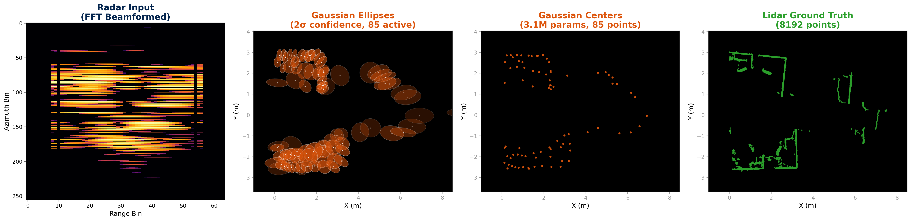

mmDar
Dense Point Clouds via
Physics-Informed Set Prediction
Problem & Approach
mmWave radar (77 GHz FMCW) offers all-weather, low-cost 3D sensing but angular resolution is limited: 8 virtual antennas yield ~14° Rayleigh resolution.
The original RadarHD pipeline discards critical information:
- Phase discarded — magnitude-only PNGs lose angular encoding
- Dynamic range reduced — 60+ dB → 8-bit (48 dB)
- Weak reflections lost — 5% magnitude threshold
Our Core Change
Move from preprocessed magnitude PNGs to raw complex IQ data, making the model physics-informed: classical FFT beamforming as input features, network learns only the residual improvement and enable real-time processing.
Physics as Input
The FFT beamformer provides the physics baseline. The network learns what physics cannot resolve — improving angular localization beyond the Rayleigh limit for sparse targets.
Dataset


Paired TI AWR1843 77 GHz FMCW radar + Velodyne VLP-16 lidar, synchronized per-frame (RadarHD dataset).
Split: 17 train / 8 val / 19 test trajectories
Test set: 18,575 frames — checkpoint selected on validation set only
Input format: Raw complex IQ (8 antennas × 512 range bins, complex64) after range FFT and TDM-MIMO Doppler compensation. 41-frame temporal stacking.
Ground truth: Lidar BEV (Bird’s-Eye View) point clouds projected to polar coordinates for direct comparison.
Model Architecture Iterations
We systematically explored architectures, moving from preprocessed images to raw radar data with physics-informed design. Each iteration informed the next.
complex128
magnitude
41 frames
17.5M params
complex64
fixed weights
ResBlocks
96 queries
μ, σ per point
All Iterations & Results
| Model / Iteration | Input | Params | Chamfer ↓ | Mod-H ↓ | Key Finding |
|---|---|---|---|---|---|
| Published RadarHD | PNGs | 17.5M | 0.360 | 0.240 | Original paper result |
| Our Baseline (U-Net) | PNGs ×41 | 17.5M | 0.406 | 0.296 | Honest val-selected eval |
| ConvLSTM Temporal | PNGs seq. | 27.5M | 0.603 | — | Temporal fusion too late; 2× worse |
| Raw IQ Mag+Phase | IQ ×1 | ~2M | 0.309 | 0.423 | Phase helps Chamfer; single-frame limit |
| Temporal Cross-Attn | FFT ×8 | 2.2M | 0.295 | 0.429 | Matched baseline Chamfer; mod-H gap |
| Physics-Informed Loss | FFT | — | 14.5 | — | Diverged — competing gradients |
| Gaussian (8 frames) | IQ ×8 | 1.6M | 0.421 | 0.345 | Hungarian NLL > Chamfer for mod-H |
| Gaussian (41 frames) | IQ ×41 | 4.6M | 0.356 | 0.278 | Temporal context adds 19% mod-H gain |
| Physics-First 2D Gaussian | FFT 2D ×41 | 3.1M | 0.318 | 0.230 | Best: FFT as input + DETR + Gaussian |
| LISTA + U-Net Occupancy | FFT features | ~3M | 1.281 | 1.844 | Beamformer is information bottleneck |
Final Architecture: Physics-First 2D Gaussian Set Decoder
Visual Comparison

Evaluation Methodology
All metrics computed on BEV point clouds (polar → Cartesian). Checkpoints selected on validation set only.
Chamfer Distance (Mean Error)
Average bidirectional nearest-neighbor distance. Measures coverage.
Modified Hausdorff (Worst-Case)
Median of nearest-neighbor distances, max direction. Penalizes outliers and gaps.
IoU & F1 (Polar Grid)
Binary classification on 256×512 polar grid. IoU measures overlap of occupied cells; F1 balances precision and recall of detections.
Precision / Recall @ 0.1m
Precision: fraction of predicted points within 0.1m of any GT point. Recall: fraction of GT points with a prediction within 0.1m. Threshold-based point-level accuracy.
Why Multiple Metrics?
Chamfer measures mean quality. mod-H measures worst-case. IoU/F1 measure detection. A model that sprays points scores well on Chamfer but poorly on mod-H. Our Gaussian model improves all metrics simultaneously.
Results & Conclusions
| Model | Chamfer ↓ | Mod-H ↓ | Params |
|---|---|---|---|
| Published RadarHD | 0.360 | 0.240 | 17.5M |
| Our Baseline (U-Net) | 0.406 | 0.296 | 17.5M |
| ConvLSTM Temporal | 0.603 | — | 27.5M |
| Ours (Gaussian) | 0.318 | 0.230 | 3.1M |
vs. honest baseline
(3.1M vs 17.5M)
preserves phase info

Conclusions: Operating on raw complex IQ instead of preprocessed PNGs, our 3.1M-parameter model achieves 22% lower error than the 17.5M-parameter baseline at <3ms per frame — well under 50ms real-time. mmWave radar with physics-informed architectures can produce dense point clouds approaching lidar quality at a fraction of the sensor cost.